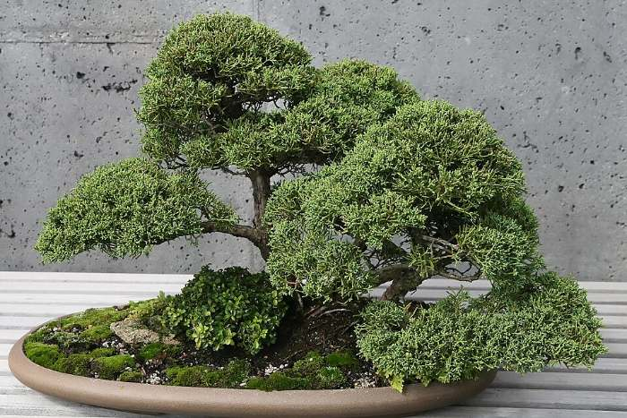

물어보세요답변완료
진백 밑 끝이 갈색으로 변했어요, 죽어가는 건가요?
초초록손· 2026.10.17 21:40 · 조회 156내 나무: 입문용 미니 진백 (2026.4 입양)
4월에 이키본에서 데려온 미니 진백이에요. 베란다에서 잘 키우다가 2주 전부터 아래쪽 잎 끝이 갈색으로 변하기 시작했어요. 물은 겉흙 마르면 주고 있고, 햇빛은 오전에만 들어요. 윗부분은 아직 초록인데 밑에서부터 올라오는 느낌이라 불안합니다. 사진 첨부할게요.


좋아요 6같은 고민 11공유
박박○○ 이키본 장인
경력 22년 · 송백류 담당 · 2026.10.18 09:12 답변
초록손님, 사진 잘 봤어요. 결론부터 말씀드리면 죽어가는 게 아니라 정상적인 가을 현상일 가능성이 높아요. 진백은 가을이 되면 안쪽·아래쪽의 오래된 잎을 스스로 떨굽니다. 사진처럼 바깥쪽 새 잎은 초록이고 안쪽만 갈색이면 걱정 안 하셔도 돼요.
다만 두 가지만 확인해 주세요. 첫째, 갈색 잎을 손으로 살짝 잡아당겨서 쉽게 떨어지면 묵은 잎이고, 가지째 바삭하게 부러지면 그 가지는 말라죽은 거예요. 둘째, 오전 햇빛만 드는 베란다라면 하루 4시간은 조금 부족해요. 가능하면 가장 밝은 쪽으로 옮기고, 겨울엔 유리창 바로 앞이 좋아요.
지금 할 일
1. 갈색 잎을 손으로 떼어내기 (가위 말고 손으로, 통풍 목적)
2. 물은 지금처럼 겉흙 마르면 · 11월부터 3~4일에 한 번
3. 비료는 올해 그만 · 내년 3월부터
4. 한 달 뒤 사진 한 장 더 올려주시면 다시 봐드릴게요